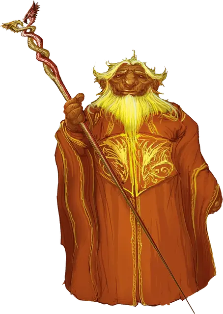

Ауринакс
Aurinax
Огромный Дракон, законно-добрый, именной НИП

Класс Доспеха 19 (природный доспех)
Хиты 256 (19к12 + 133)
Скорость 40 футов, плавая 40 футов, летая 80 футов
| мод | спас | ||
|---|---|---|---|
| СИЛ | 27 | +8 | +8 |
| ЛОВ | 14 | +2 | +8 |
| ТЕЛ | 25 | +7 | +13 |
| мод | спас | ||
|---|---|---|---|
| ИНТ | 16 | +3 | +3 |
| МДР | 15 | +2 | +8 |
| ХАР | 24 | +7 | +13 |
Навыки Восприятие +14, Проницательность +8, Скрытность +8, Убеждение +13
Иммунитет к урону огонь
Чувства слепое зрение 60 футов, тёмное зрение 120 футов, пассивное Восприятие 24
Языки Общий, Драконий
Опасность 17 (18000 опыта)
Бонус мастерства +6
Особенности
Амфибия. Ауринакс может дышать и воздухом и под водой.
Легендарное сопротивление (3/день). Если Ауринакс проваливает спасбросок, он может вместо этого сделать спасбросок успешным.
Действия
Мультиатака. Ауринакс может использовать Ужасающее присутствие. Затем он совершает три атаки: одну укусом, и две когтями.
Укус. Рукопашная атака оружием: +14 к попаданию, досягаемость 10 футов, одна цель. Попадание: Колющий урон 19 (2к10 + 8).
Коготь. Рукопашная атака оружием: +14 к попаданию, досягаемость 5 футов, одна цель. Попадание: Рубящий урон 15 (2к6 + 8).
Хвост. Рукопашная атака оружием: +14 к попаданию, досягаемость 15 футов, одна цель. Попадание: Дробящий урон 17 (2к8 + 8).
Ужасающее присутствие. Все существа на выбор дракона, находящиеся в пределах 120 футов от него и знающие о его присутствии, должны преуспеть в спасброске Мудрости Сл 21, иначе станут испуганными на 1 минуту. Существо может повторять этот спасбросок в конце каждого своего хода, оканчивая эффект на себе при успехе. Если спасбросок существа был успешным, или эффект на нём окончился, оно получает иммунитет к Ужасающему присутствию этого дракона на следующие 24 часа.
Оружия дыхания (перезарядка 5–6). Ауринакс использует один из следующих видов оружия дыхания.
• Огненное дыхание. Дракон выдыхает огонь 60-футовым конусом. Все существа в этой области должны совершить спасбросок Ловкости Сл 21, получая урон огнём 66 (12к10) при провале, или половину этого урона при успехе.
• Ослабляющее дыхание. Дракон выдыхает газ 60-футовым конусом. Все существа в этой области должны преуспеть в спасброске Силы Сл 21, иначе в течение 1 минуты будут совершать с помехой броски атаки, основанные на Силе, проверки Силы и спасброски Силы. Существо может повторять этот спасбросок в конце каждого своего хода, оканчивая эффект на себе при успехе.
Смена формы. Ауринакс магическим образом превращается в гуманоида или зверя, чей показатель опасности не превышает его собственный, или принимает свой истинный облик. Он принимает свой истинный облик, если умирает. Всё снаряжение, которое он несёт или носит, сливается с новым обликом или используется им (на выбор дракона).
В новом облике дракон сохраняет мировоззрение, хиты, Кости Хитов, способность говорить, владения, Легендарные действия, действия логова, значения Интеллекта, Мудрости и Харизмы, а также действия. Все остальные характеристики и умения заменяются характеристиками и умениями нового облика, за исключением классовых умений и легендарных действий нового облика.
Легендарные действия
Ауринакс может совершить 3 легендарных действия, выбирая из представленных ниже вариантов. За один раз можно использовать только одно легендарное действие, и только в конце хода другого существа. Дракон восстанавливает использованные легендарные действия в начале своего хода.
Обнаружение. Ауринакс совершает проверку Мудрости (Восприятие).
Атака хвостом. Ауринакс совершает атаку хвостом.
Атака крыльями (стоит 2 действия). Аауринакс бьёт своими крыльями. Все существа в пределах 10 футов от дракона должны преуспеть в спасброске Ловкости Сл 22, иначе получат дробящий урон 15 (2к6 + 8) и будут сбиты с ног. После этого дракон может пролететь на расстояние, не превышающее половину скорости полёта.
Описание
Ауринакс — взрослый золотой дракон, мужчина. Он способен игнорировать драконий оберег Агерона и живёт в городе. Архимаг Маарил, последним владевший драконьим посохом Агерона, был другом Ауринакса и пригласил дракона пожить с ним в Драконьей башне. Незадолго до Чумы Заклятий Маарил сошёл с ума и покинул Глубоководье, отдав драконий посох Ауринаксу.
Когда Явным лордом Глубоководья стал Дагульт Неверембер, он заключил с драконом сделку. По её условиям Ауринакса мог оставить себе драконий посох Агерона, а взамен должен сторожить хранилище под городом. Когда Неверембер наконец заберёт сокровища из хранилища, Ауринакс с посохом сможет вернуться в Драконью башню.
Как известно, за сокровищами никто не пришёл, так что верный Ауринакс остался в хранилище. Оно защищено от магии Прорицания, а в Глубоководье не осталось никого, кто знал бы о Ауринаксе и о том, где теперь драконий посох.
Игровая характеристика
Ауринакс— взрослый золотой дракон. Он часто принимает форму пожилого золотого дварфа по имени Барок Клангхаммер, а драконий посох использует как клюку.
См. дополнительно статью: "Бестиарий: Драконы"